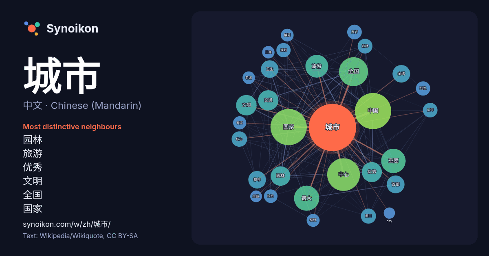

中文 · Chinese (Mandarin) · word of the day list
城市
“city” · The words found around it in 2557 instances from Chinese (Mandarin) Wikipedia, Wikiquote.

Most distinctive neighbours
- 园林 60×
- 旅游 54×
- 优秀 52×
- 文明 48×
- 全国 46×
- 国家 39×
- 卫生 39×
- 首都 38×
- 都市 37×
- 友好 31×
- 港口 30×
- 名城 29×
- 沿海 29×
- 最大 29×
- 模范 28×
- 中心 27×
- 长江 26×
- 列表 26×
- 枢纽 26×
- 交通 25×
× = how many times more often than in general Chinese (Mandarin) Wikipedia text.
Most frequent neighbours
- 国家 259
- 中国 258
- 中心 211
- 人口 166
- 全国 165
- 最大 124
- 重要 117
- 也是 107
- 旅游 102
- 世界 96
- 文明 83
- 交通 81
- 优秀 79
- 园林 75
- 经济 71
- 首都 62
- 全球 61
- 卫生 61
- 都市 61
- 地区 52
In context
- 城市中直接加工销售相对于将已加工好的商品拿到城市中来交换而言，则正是一种随着工业城市的出现而产生的一种商业变革。城市包括城市规模、城市功能、城市布局和城市交通，而这几方面所发生的变化，都必然地会对城市的商业活动带来影响，促使其发生相应的变革。 城市经济学对城市作了不同等级的分类，如小城市、中等城市 Wikipedia snippets · 城市
- Xäĥiri），简称乌市，旧称迪化市，是中华人民共和国新疆维吾尔自治区首府，西部地区重要的中心城市，国际性综合交通枢纽城市。西北地区第二大城市，丝绸之路经济带、新亚欧大陆桥及天山北坡城市群核心城市，亦是新疆的政治、经济、文化、金融、交通、医疗、教育中心，以及面向中亚西亚交往中心和国际商贸物流中 Wikipedia snippets · 乌鲁木齐市
- 城市。近年來，隨著全球化（即全球金融、電訊、通訊及交通）的擴張，城市文明與軟實力的影響達到鼎盛，「全球城市」一詞亦漸漸為人熟悉，纽约和伦敦是世界上最著名的两座全球都市。 《倫敦新聞畫報》早於1886年已經使用「世界城市」（world city）一詞來形容利物浦這類不合比例地左右全球商業情勢的城市 Wikipedia snippets · 全球城市
- 城市排行中排名第6位，与中国的其他城市相比，仅次于香港和上海。北京被世界城市研究机构GaWC评为世界一线城市，联合国报告指出北京人类发展指数居中国大陆城市第一位。北京也是世界上唯一的「雙奧之城」，即既主办过夏季奥运会，也主办过冬季奥运会的城市。 《北京城市 Wikipedia snippets · 北京市
- 青岛市，简称青，旧称胶澳，别称胶、琴岛、岛城，是中华人民共和国山东省的副省级市、计划单列市和区域中心城市，山东省最大城市，中国沿海重要中心城市和滨海度假旅游城市、国际性港口城市、国家历史文化名城，山东半岛城市群和青岛都市圈中心城市，青岛经济发达，在北方城市中，经济总量仅次于京津2个直辖市（2020年数据）。市人民政府駐市南区香港中路11号。 Wikipedia snippets · 青岛市
- 城市规划（英語：Urban Planning，台湾作都市计画）是处理城市及其邻近区域的工程建设、經濟、社会、土地利用布局以及对未来发展预测的專門學問或技術。它的对象偏重于城市物质形态的部分，涉及城市中产业的区域布局、建筑物的区域布局和分類管制、道路及运输设施的设置、公共設施的規劃建設及城市 Wikipedia snippets · 城市规划
- 香港城市大學（英語：City University of Hong Kong，縮寫：CityU），簡稱城大，是香港其中一所公立研究型大學以及綜合大學，校園位於香港九龍深水埗區。鄰近又一城及港鐵九龍塘站，該校創立於1984年，當時稱為香港城市理工學院，簡稱城市 Wikipedia snippets · 香港城市大學
- 城市联盟会员城市，中国最爱阅读城市，中国集成电路产业中心城市，国家科技创新型试点城市，中国四大科教基地之一。2018年9月，被授牌成为“海峡两岸集成电路产业合作试验区”。2018年中国内地城市综合排名17名。2020年，合肥首次跻身新一线城市；同年9月2日被评为国家公交都市建设示范城市。市人民政府駐蜀山区东流路100号 … Wikipedia snippets · 合肥市
More Chinese (Mandarin) words
Precomputed on 2026-10-09 with default settings (±5 words, medium corpus). The interactive map can refresh it with live data.